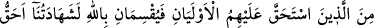

“Aksini yaparsak bu takdirde” yani eğer şâhitliği gizlersek “elbette günahkarlardan
oluruz.” Yani isyan edenlerden oluruz.
107. Bu şâhitlerin (sonradan yalan söyleyerek) bir günah işledikleri anlaşılırsa,
(şâhitlerin) haklarına tecavüz ettiği ölüye daha yakın (mirasçılardan) iki kişi
onların yerine geçer ve Allah’a şöyle yemin ederler: “Andolsun ki bizim
şâhitliğimiz onların şâhitliğinden daha doğrudur ve biz (kimsenin hakkını)
çiğnemedik. Yoksa biz, elbette zalimlerden oluruz.”
“Bu şâhitlerin bir günah işledikleri” yani ellerinde terekeye dahil mallardan bazıları
görülür ve herhangi bir yolla o malın gerçek sahibi hâline geldiklerini iddia etmek
suretiyle yalan ve hakkı gizlemek gibi vebal gerektiren bir suçu işledikleri
“anlaşılırsa” yani kendilerine yemin ettirildikten sonra böyle bir durumdan haberdar
olunursa “(Şahitlerin) haklarına tecavüz ettiği ölüye daha yakın iki kişi onların
yerine geçer.” Yani evvelkilerin yalancılıkları ispatlandığında yerlerine kendilerine
haksızlık edilen tarafın vârislerinden, âile ve akrabasından iki ehliyetli kimse geçer.
Onlar ölüye daha yakın ve ona vâris olduklarından şâhitliğe, yani yemine daha hak
sahibi kimselerdir. Şahitliğin kendilerine tahsis edilmesine ve yalancıların yalanını
açığa çıkarmaya daha layık ve uygun kimselerdir.
“Ölüye daha yakın iki kişinin onların yerine geçmesi,” önceki şâhitlerin üstlenip de
gereği gibi yerine getirmedikleri şâhitliği yapmaları, demek değildir. Aksine işin
doğrusunu ortaya koymak için daha önce belirtildiği gibi namazdan sonra onlara da
yemin ettirilmesi mânâsınadır.
“Allah’a şöyle yemin ederler: Andolsun ki bizim şâhitliğimiz onların şâhitliğinden
daha doğrudur.” Buradaki şâhitlik, yemin anlamına gelir. Nitekim Allah Teâlâ başka
bir âyette: “Onlardan her birinin şâhitliği, dört defa Allah’ı şâhit tutması yani
yemin etmesidir.” (en-Nur, 24/6) buyurmuştur. Bu âyette de şâhitlik yemin
anlamındadır.
Bu takdirde mânâ şöyledir. “Onların bu iddialarında yalancı olduklarına dair
yeminimiz hak ve doğru olduğu için onların yemininden daha kabule şayandır. Çünkü
onların günaha girdikleri, ortaya çıkmıştır. Bizim yeminimiz ise her türlü şüpheden
uzaktır.”
Sonra yemin edenlerin, önceki şâhitlerin yeminlerinin doğru olduğuna hiç
inanmadıkları halde kendi yeminlerinin daha doğru olduğunu söylemeleri, onların
mevzubahis eşyayı ellerinde bulundurmaları sebebiyle sahiplik iddialarında doğru